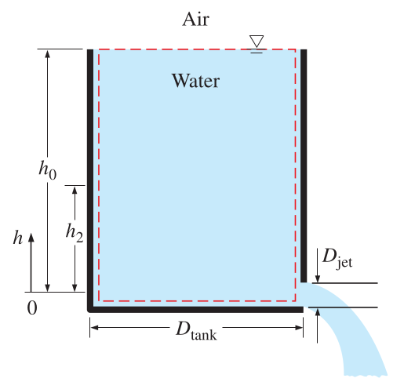

Elementary Fluid Mechanics
CE-ENGIN 357 - Fall 2024
Reminder
Reynolds Transport Theorem \[\dfrac{d}{dt} \left( B_{\text{sys}} \right) = \dfrac{d}{dt} \left( \int_{\text{CV}} b \rho d V\kern-0.8em\raise0.3ex- \right) + \int_{\text{CS}} b \rho (\vec{V} \cdot \vec{n}) dA\]

Volume and Mass flow rates
Amount of fluid through \(dA\) in time \(dt\) \[d V\kern-0.8em\raise0.3ex-_ = \left( \vec{V} \cdot \vec{n} \right) dA dt\]
Volumetric flow rate
\[Q = \int_S \left( \vec{V} \cdot \vec{n} \right) dA = \int_S V_n dA\]
- \(\vec{n}\) is considered positive outwards
- If \(Q\) is positive then outflow
- If \(Q\) is negative then inflow
- Typical units are \(m^3/s\)
Mass flow rate
If we multiply by density \[ \dot{m} = \int_S \rho \left( \vec{V} \cdot \vec{n} \right) dA = \int_S \rho V_n dA\]
If density and velocity are constant over \(S\) then \[\dot{m} = \rho Q = \rho A V\]
Average velocity

\[V_{\text{avg}} = \dfrac{1}{A} \int_A V_n dA\]
\(A\) is the cross-sectional area normal to the flow direction
Conservation of mass
The net mass transfer to or from a control volume during a time interval \(\Delta t\) is equal to the net change (increase or decrease) of the total mass within the control volume.
\[m_{\text{in}} - m_{\text{out}} = \Delta m_{\text{CV}}\] \[\dot{m}_{\text{in}} - \dot{m}_{\text{out}} = \dfrac{dm_{\text{CV}}}{dt}\]
From Reynolds Transport Theorem
\[\dfrac{d}{dt} \left( B_{\text{sys}} \right) = \dfrac{d}{dt} \left( \int_{\text{CV}} b \rho d V\kern-0.8em\raise0.3ex- \right) + \int_{\text{CS}} b \rho (\vec{V} \cdot \vec{n}) dA\]
\(B=m\) and \(b=B/m=1\)
\[\dfrac{d}{dt} \left( m_{\text{sys}} \right) = 0 = \dfrac{d}{dt} \left( \int_{\text{CV}} \rho d V\kern-0.8em\raise0.3ex- \right) + \int_{\text{CS}} \rho (\vec{V} \cdot \vec{n}) dA\]
\[\boxed{\int_{\text{CV}} \dfrac{d \rho}{dt} d V\kern-0.8em\raise0.3ex- + \int_{\text{CS}} \rho \left( \vec{V} \cdot \vec{n} \right) dA = 0}\]
Usually we deal with inlets and outlets \[ \int_{\text{CV}} \dfrac{d \rho}{dt} d V\kern-0.8em\raise0.3ex- + \sum_{\text{out}} \rho V_n A - \sum_{\text{in}} \rho V_n A = 0\]
\[\boxed{ \int_{\text{CV}} \dfrac{d \rho}{dt} d V\kern-0.8em\raise0.3ex- = \dfrac{dm_{\text{CV}}}{dt} = \sum_{\text{in}} \dot{m} - \sum_{\text{out}} \dot{m}}\]
Choosing the control volume
Steady flow
The total rate of mass entering a control volume is equal to the total rate of mass leaving it.
\[\cancelto{0}{\dfrac{dm_{\text{CV}}}{dt}} = \sum_{\text{in}} \dot{m} - \sum_{\text{out}} \dot{m}\]
\[\sum_{\text{in}} \dot{m} = \sum_{\text{out}} \dot{m}\]
Incompressible steady flow

\[\dot{m}_1 = \dot{m}_2 \Rightarrow \rho_1 V_1 A_1 = \rho_2 V_2 A_2\]
For liquids \(\rightarrow\) incompressible flow
\[V_1 A_1 = V_2 A_2\]
Example
The velocity profile for flow through a circular tube is \(u = U_0 \left( 1 - \dfrac{r}{R} \right)^{m}\) Compute the average velocity for laminar flow (\(m \approx 1/2\)).

Solution
\[\overline{V} = \dfrac{1}{A} \int u dA\]
\[\overline{V} = \dfrac{1}{\pi R^2} \int_0^R U_0 \left( 1 - \dfrac{r}{R} \right)^{m} 2 \pi r dr\]
\[\overline{V} = U_0 \dfrac{2}{(1+m)(2+m)}\]
\[\overline{V} \approx 0.53U_0\]
Example
A 4-ft high, 3-ft diameter cylindrical water tank is filled with water. The discharge plug is pulled out and a water jet whose diameter is 0.5 in streams out. The average velocity of the jet is \(V=\sqrt{2gh}\). How long will it take for the water level in the tank to drop to 2 ft from the bottom?
Solution
\[\dot{m}_{\text{in}} - \dot{m}_{\text{out}} = \dfrac{dm_{\text{CV}}}{dt}\]
\[\dot{m}_{\text{in}} = 0\] \[\dot{m}_{\text{out}} = \rho V A = \rho \sqrt{2gh} (\pi D_{\text{jet}}^2 / 4)\]
\[m_{\text{CV}} = \rho V\kern-0.8em\raise0.3ex- = \rho h \pi D_{\text{tank}}^2 / 4\]
\[-\rho \sqrt{2gh} (\pi D_{\text{jet}}^2 / 4) = \dfrac{\pi D_{\text{tank}}^2}{4} \dfrac{dh}{dt}\]
\[dt = - \dfrac{D_{\text{tank}}^2}{D_{\text{jet}}^2} \dfrac{dh}{\sqrt{2gh}}\]
\[\int_0^t dt = - \dfrac{D_{\text{tank}}^2}{D_{\text{jet}}^2 \sqrt{2g}} \int_{h_0}^{h_2} \dfrac{dh}{\sqrt{h}}\]
\[t = \dfrac{\sqrt{h_0}- \sqrt{h_2}}{\sqrt{g/2}} \left( \dfrac{D_{\text{tank}}}{D_{\text{jet}}} \right)^2\]
\[t = \dfrac{\sqrt{4} - \sqrt{2}}{\sqrt{32.2/2}} \left( \dfrac{(3)(12)}{0.5} \right)^2 = 757\,\mathrm{s}\]